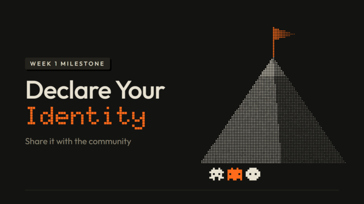

_
What You Need to Complete
Congrats on finishing Week 1.
Post your content identity: who you are and what you do, what you find interesting and could teach, how others would find it useful, and your angles of how you're unique.
Remember to use the Content Trifecta to think about what you can start posting, BUT it doesn't have to be perfect.
It can just be general for now, and we can change it later on. The intention here is just for you to get used to the idea of BEING a producer of content.
Tip: Send this prompt to your agent. It will help you think it through, then write your post:
"""Based on everything you know about me, use this prompt to guide me to the best possible version of this week's milestone: my content identity post. Lean on what you know about my work, my life and how I talk at every step, so you're steering me, not just interviewing me. The post goes in the Intros tab of our Skool community, so it should sound like me saying hi to our fellow members, not really like an announcement. Work with me step by step, don't jump to the answer.
1. Before you ask me anything, gather everything you know about me: your memory of me, my profile and instruction files (like CLAUDE.md), my projects and files in this folder, our past chats, and my earlier posts. Tell me in 2-3 lines what you found. Then use all of it the whole way through: skip any question you can already answer, put your best guess about me first in each multiple choice, and build the angles, ideas and post from my real details.
2. Interview me. If your app has a built-in question tool (clickable multiple-choice questions, like AskUserQuestion in Claude Code), use it, unless I say I'd rather type. Otherwise ask in chat as multiple choice (A, B, C, D, plus "something else") so I can answer fast, like "1B 2D". Ask a few at a time, and only what you can't already answer:
- who I am and what I do, plus one detail people would remember (where I live, my day job, a habit)
- what I find interesting and could talk about or teach
- who would find it useful, and how
- what could make me unique: my industry or job, my life stage, my country or language, or a format only I'd use
- one funny or honest moment from my work I'd be happy to share3. Give me 3 angles of how I'm unique. Make each one a small pond that joins two things, like "simple AI for 1 to 2 chair dental clinics", with one line on why it fits me.
4. Check in: ask which angles feel like me and what's off, and refine them with me until all 3 do.
5. Pick a post shape with me: show me the 4 shapes below in one line each and recommend the one that fits me best. Then write my post in that shape, and give me the 3 poll options on their own lines so I can paste them into a Skool poll. Write each option like the title of a tutorial or topic someone would click for that angle, like "How to get AI past compliance at a small firm", about 50 characters at most.
To help you craft my post, here's roughly how it should sound:
- Like me talking to friends who are doing the same course. Maybe open with a hello and talk to people
- A bit of humour or honesty is good. Don't invent anything about me; if you don't know it, ask.
- Match my tone from how I talk to you in this chat and from what you know from our convos
- Optionally if I like them go ahead and use a few emoji that fit me and my work, not one on every line
- No AI speak please. no em dashes, no hype words (no "here's the thing", no "it's not just X, it's Y", and no closing line that sums up or tries to sound deep.
- The only hashtag is #week1, on its own line at the very end.The title says plainly what the post is about, in my words, with a real detail, ideally in 80 characters or fewer. Never "Week 1", never "My content identity"
Here are a few post shapes that can guide you, but feel free to do another entirely based on how we chatted. Maybe give me two versions so I can pick and refine from there.Shape A, Classic hello:
Title: Hey everyone! I'm [name], [what I do] [emoji]
[Hello line] [emoji]
I'm [name], [what I do and where, with one detail people would remember].
[What I do with this today, with a real number or detail.]
What I'd love to talk about: [what I find interesting and could teach, with one honest or funny example].
Who I'd help: [who it's for, and how].
Here are my 3 angles, and I'd love your vote 👇
1. [Angle 1]
2. [Angle 2]
3. [Angle 3]
[One easy question for the room, or an invite to say hi.]
#week1Shape B, Help me pick:
Title: Help me pick my angle! [emoji]
[Hello line] I need your help with my milestone [emoji]
I'm stuck between 3 angles for my content. Which one would you actually watch?
1. [Angle 1]
↳ [why, in a few words]
2. [Angle 2]
↳ [why]
3. [Angle 3]
↳ [why]
A bit about me: [who I am, what I do, who I want to help, one real detail].
Vote below and tell me why in the comments 👇 [a quick thanks]
#week1Shape C, Postcard:
Title: Hello from [my city or place]! [emoji]
Hello from [place]! [emoji]
I'm [name], [what I do], and [one funny or honest line about me].
Quick snapshot:
[emoji] [fact]
[emoji] [fact]
[emoji] [fact]
[emoji] [fact]
What I want to share: [what I could teach, who it helps, and how].
My 3 possible angles:
1. [Angle 1]
2. [Angle 2]
3. [Angle 3]
Vote below! And [an invite to the room] [emoji]
[my first name]
#week1Shape D, Wildcard:
No template. Make something completely different from A, B and C, built from my answers, everything you know about me and the way I talk, so it sounds like me. It still follows the voice rules and the title rule, has my 3 angles for the poll, and ends with #week1."""
📊 Bonus Tip: Add a poll to your post with your 3 angles as the options (helps with getting immediate feedback from our community!)
_
Where to Post
Share your milestone in the 👋🏻 Intros tab.
_
Resources
Tunde Anthony, Fact or Hype: link - his clip-then-test format on Instagram, an example of a unique format.
Casey Neistat: link - daily life videos from New York that people watch because it's him.